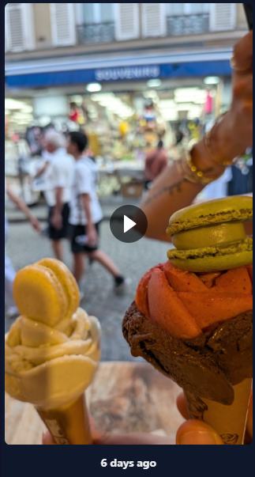
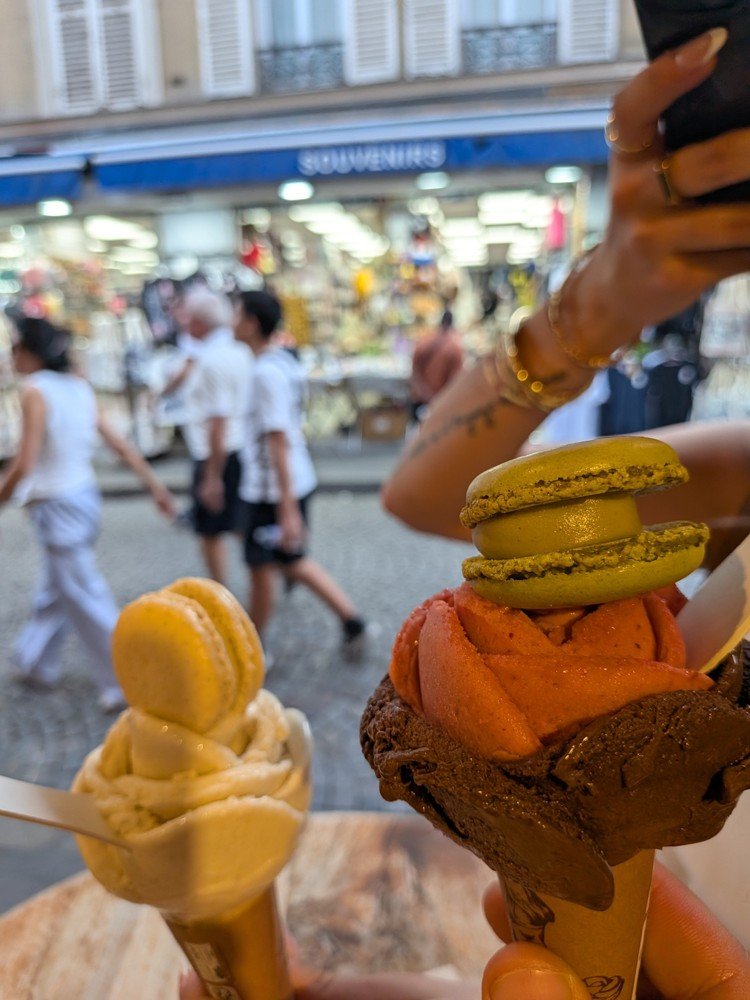
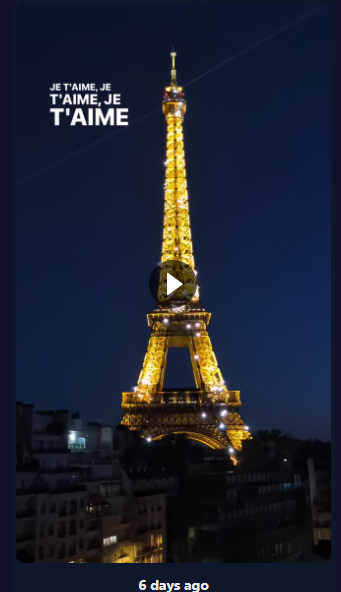
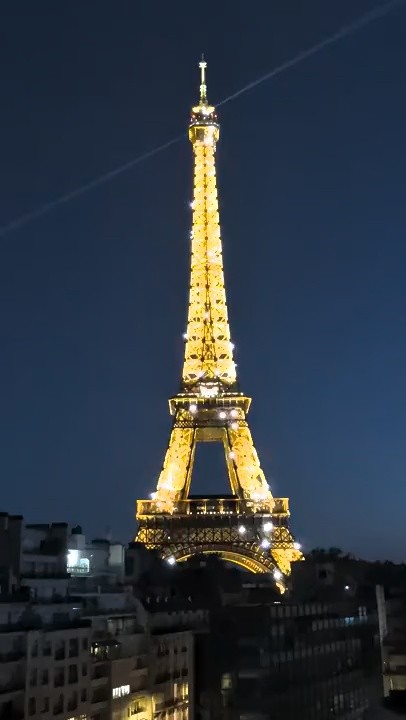

Claimant: Hassan A. Khalifeh · Reported account: @elisaarruiz · Updated 14 October 2026
Reported location supplied by claimant: https://www.instagram.com/stories/highlights/18115118518915706/
Second reported highlight: https://www.instagram.com/stories/highlights/18090733340100249/
Neither supplied highlight screenshot displays its highlight ID or URL. Both reported URLs are retained from the claimant’s report, but the screenshots cannot independently establish which highlight contains each item. Existing report 1621522432682455 claims the Eiffel Tower video only; adding evidence here does not amend that report to include the ice-cream item.
Full supplied screenshots are preserved below. Source previews are resized only for display; original source links are provided. “Visual match” means corresponding image content, not byte-identical files or proof of authorship by image matching alone. Slide positions are counted from visible pagination dots; no position is assigned when the indicator is missing or incomplete. Carousel URLs are claimant-supplied because these screenshots do not display the address bar.
| Screenshot | Position | Source | Finding |
|---|---|---|---|
| 120149 | Highlight; URL not visible | P-07 | Still-image visual match |
| 120222 | Highlight; URL not visible | V-01 | Video scene correspondence |
The visible ice-cream image matches P-07. The play icon does not establish whether the whole reported clip is a still-photo presentation or a distinct video; no matching full video is supplied.


The Eiffel Tower scene corresponds to the supplied video review copy. The comparison frame is at 0.00 seconds; it is representative, not a verified identical timestamp. A screenshot alone does not verify the full reported clip.


Original filename identified by claimant: PXL_20260812_200341606.mp4.
Related reports: 1056378363907479 and 2649127802224453. This page supplements evidence; it does not change previously submitted form text.